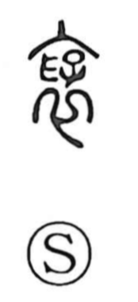

褒

Uncategorized
Kun: homeru | On: hou
to praise ・ commendation ・ reward
Explanation
A phono-semantic character whose original form is written 襃: the outer element is 衣, “garment,” and within it sits 孚 as the phonetic. 孚 depicts a hand placed over a child, an image Shirakawa reads as the full, nurturing breast while holding a child to nurse. From this image of ample embrace arise senses of “wide” and “loose” as of flowing clothing, and by extension the gracious act of praising and rewarding. Hence its use in words for official commendations and prizes, such as 褒賞, 褒美, and 褒章.